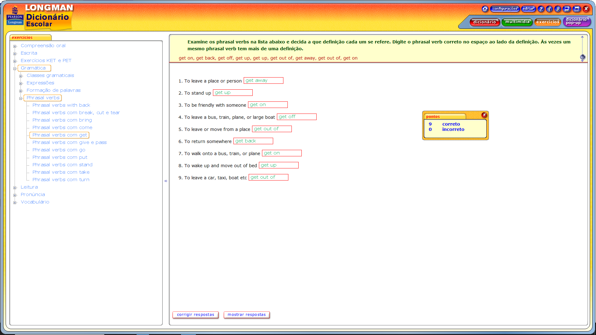
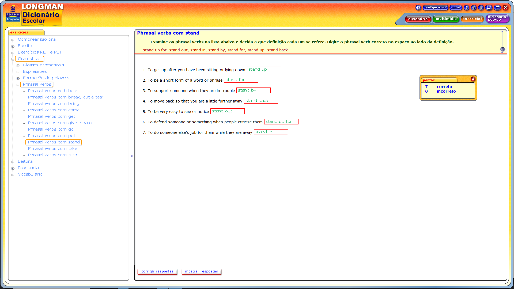

To arrange for something to happen at an earlier time than originally planned: (bring forward) = Fazer com que algo aconteça mais cedo do que o planejado originalmente: (antecipar)
To start to talk about something: (bring something up) = Começar a falar sobre algo: (mencionar)
To start using something again that was used in the past: (bring back) = Começar a usar algo novamente que foi usado no passado: (trazer de volta)
To reduce the number or amount of something: (bring down) = Reduzir a quantidade ou número de algo: (diminuir)
To care for children until they are adults: (bring someone up) = Cuidar das crianças até que sejam adultas: (criar)
To make someone remember something: (bring back) = Fazer alguém lembrar de algo: (trazer de volta à memória)
To enter a room or house: (come in) = Entrar em um cômodo ou casa: (entrar)
To move to the front or the top of something: (come up) = Mover-se para a frente ou o topo de algo: (subir)
To start being separate or removed from something: (come off) = Começar a se separar ou ser removido de algo: (se soltar)
If someone comes to the place where you are: (come over) = Se alguém vem ao lugar onde você está: (vir)
If an event or time will happen soon: (be coming up) = Se um evento ou horário acontecerá em breve: (aproximar-se)
To return to a place: (come back) = Retornar a um lugar: (voltar)
To move from the top of something to the bottom: (come down) = Mover-se de cima de algo para baixo: (descer)
When the sun, moon, or stars can be seen in the sky: (come out) = Quando o sol, lua ou estrelas podem ser vistos no céu: (sair/aparecer)
To visit someone: (come round) = Visitar alguém: (visitar)
Used to talk about the place where you were born or where you first lived: (come from) = Usado para falar sobre o lugar onde você nasceu ou onde viveu pela primeira vez: (vir de)

To leave a place or person - get away = Para deixar um lugar ou pessoa, fugir.
To stand up - get up = Para se levantar, levante-se.
To be friendly with someone - get on = Para ser amigável com alguém, dar-se bem.
To leave a bus, train, plane, or large boat - get off = Para sair de um ônibus, trem, avião ou barco grande.
To leave or move from a place - get out of = Para sair ou mover-se de um lugar.
To return somewhere - get back = Para retornar a algum lugar.
To walk onto a bus, train, or plane - get on = Para entrar em um ônibus, trem ou avião.
To wake up and move out of bed - get up = Para acordar e sair da cama.
To leave a car, taxi, boat, etc. - get out of = Para sair de um carro, táxi, barco, etc.

To move slowly backwards because you are afraid, shocked etc - back away = Para se mover lentamente para trás porque você está com medo, chocado etc - recue.
To support someone or show that what they are saying is true - back up = Para apoiar alguém ou mostrar que o que ele está dizendo é verdade.
To stop saying that you are right about something and admit that you are wrong - back down = Para parar de afirmar que você está certo sobre algo e admitir que está errado.
To decide not to do something you had agreed to do - back out = Para decidir não fazer algo que você havia concordado em fazer.
To make a copy of information on a computer - back up = Para fazer uma cópia de informações em um computador.
To move away from someone in order to avoid a problem - back off = Para se afastar de alguém para evitar um problema.
To separate something into many pieces - break up = Separar algo em vários pedaços.
If a car or a machine stops working - break down = Se um carro ou máquina para de funcionar.
To deliberately destroy a building - tear down = Destruir deliberadamente um prédio.
To use force to get into a building - break in = Usar força para entrar em um prédio.
If a disease, fire, war etc starts - break out = Se uma doença, incêndio, guerra etc começa.
To stop supplying something to someone - cut off = Parar de fornecer algo para alguém.
To pull paper into lots of pieces - tear up = Rasgar papel em vários pedaços.
To make an amount, number, cost etc smaller - cut back = Reduzir uma quantidade, número, custo etc.
To use force to get through something that is stopping you from moving forward - break through = Usar força para passar por algo que está impedindo o progresso.
To do something less or use less of something - cut down = Fazer algo menos ou usar menos de algo.
To stop doing something give up = Parar de fazer algo desistir
To give something to someone else, without asking for money
give away = Dar algo a outra pessoa, sem pedir dinheiro, doar
To give something that you have received to someone else pass on =
Dar algo que você recebeu para outra pessoa passar adiante
To give something to each person in a group give out =
Dar algo a cada pessoa de um grupo
A phrase meaning to die pass away = Uma frase que significa morrer falecer
To give or teach something to people who are born after you pass down =
Dar ou ensinar algo às pessoas que nasceram depois de você passar adiante
To return something to the person who owns it give back =
Devolver algo ao dono
To suddenly become unconsciuos pass out =
Ficar inconsciente de repente desmaiado
To become less in amount, price, level etc go down =
Para diminuir em quantidade, preço, nível etc. diminuem
To leave a place or person go away =
Deixar um lugar ou pessoa ir embora
To continue go on = Para continuar, continue
To become more in amount, level, price etc go up =
Para aumentar em quantidade, nível, preço etc., suba
To suddenly make a loud noise or explode go off =
De repente fazer um barulho alto ou explodir
To return to a place go back = Para retornar a um lugar, volte
To leave your house to do something go out =
Sair de casa para fazer alguma coisa
To happen go on = Para acontecer, continue
To have a romantic relationship with someone go out =
Ter um relacionamento romântico com alguém para sair
To put something in the place where you usually keep it
put away = Colocar algo no lugar onde você costuma guardá-lo
To put something on a wall or in a high position put up =
Colocar algo na parede ou em um lugar alto
Not to do something at the time when you should do it put off =
Não fazer algo na hora em que você deveria fazer, adie
To put something in the place where it was before put back =
Colocar algo no lugar onde estava antes de ser recolocado
To make something by joining all the different parts together
put together = Fazer algo juntando todas as partes diferentes
colocar junto
To put something you are holding onto a table or the floor put down
= Colocar algo que você está segurando em uma mesa ou no chão
To put clothes on your body put on = Para colocar roupas em seu corpo, coloque
To accept an annoying situation or someone's annoying behaviour put up with =
Aceitar uma situação irritante ou o comportamento irritante de alguém tolerado

To get up after you have been sitting or lying down stand up =
Para se levantar depois de estar sentado ou deitado, levante-se
To be a short form of a word or phrase stand for =
Ser uma forma abreviada de uma palavra ou frase significa
To support someone when they are in trouble stand by =
Para apoiar alguém quando estiver em apuros, fique por perto
To move back so that you are a little further away stand back =
Para recuar de modo que você fique um pouco mais longe, fique para trás
To be very easy to see or notice stand out =
Para ser muito fácil de ver ou notar, destaque-se
To defend someone or something when people criticize them stand up for =
Defender alguém ou algo quando as pessoas os criticam
To do someone else's job for them while they are away stand in =
Para fazer o trabalho de outra pessoa enquanto ela estiver ausente, fique em pé
When a plane leaves the ground and goes into the air - take off = Quando um avião decola e sobe no ar.
To do something that someone else did before - take over = Fazer algo que alguém fez antes.
To move something so that it is outside of the place where it was - take out = Mover algo para fora do lugar onde estava.
To not go to work for a period of time - take off = Não ir ao trabalho por um período de tempo.
To move something back to the place or person it came from - take back = Devolver algo para o lugar ou pessoa de onde veio.
To move something from a place - take away = Retirar algo de um lugar.
To go with someone to a restaurant, film, etc., and pay for them - take out = Levar alguém a um restaurante, filme etc., e pagar para eles.
To remove clothes from your body - take off = Tirar a roupa do corpo.
To happen in a particular way - turn out = Acontecer de uma maneira particular.
To not allow someone to enter a place - turn away = Não permitir que alguém entre em um lugar.
To make a machine produce more sound, heat, etc., using its controls - turn up = Aumentar o som, calor, etc., de uma máquina, usando seus controles.
To become something different - turn into = Tornar-se algo diferente.
To press a button to change the programme on your television - turn over = Apertar um botão para mudar o programa na televisão.
To leave a road you are on and start going along a different road - turn off = Sair de uma estrada em que você está e pegar outra estrada.
To say no when someone offers you something - turn down = Recusar quando alguém oferece algo.
To make a machine, light, etc., start working, using its controls - turn on = Ligar uma máquina, luz, etc., usando seus controles.
To arrive - turn up = Chegar.
To go in the opposite direction to the one you were going in before - turn back = Voltar na direção oposta à que estava indo antes.